Figure 1: pbdR Relationships to Libraries
htmlxhtml
© 2013 pbdR Core Team. All rights reserved.
Permission is granted to make and distribute verbatim copies of this guide and its source provided the copyright notice and this permission notice are preserved on all copies.
This publication was typeset using LATEX.
In this guide, we will detail the necessary steps for how to set up a pbdR environment. What follows in the remaining sections is a very lengthy list of installation instructions; however, most users should find the process fairly straight-forward, and may not need (or want) all of the details we will provide unless something goes wrong. In any case, the short version for setting up a pbdR environment is to:
Items 1 and 2 are interchangeable, and so if you already have R (and additionally Rtools for Windows) and/or an MPI library installed, then merely skip this/these step(s); there is no need to reinstall anything.
This should be fairly painless. R has binary packages for every operating system you have heard of (and some you haven’t), and the install should go fine. Of course, since R is open source, you are free to compile it yourself, should have have reason or need to do so. You can find both the source as well as binaries at the R project’s main site: http://cran.r-project.org/.
Additionally, you may wish to customize your R build by compiling from source. For example, you may wish to link R with a high performance linear algebra library, such as MKL. See the R Installation and Administration Manual at http://cran.r-project.org/doc/manuals/R-admin.html for full details.
For Linux and Mac users, we recommend installing OpenMPI, which is available from http://www.open-mpi.org/ in both binary and source formats. Windows users should install MPICH2, available from http://www.mpich.org/ .
All released pbdR packages are available from http://cran.r-project.org/ which is the Comprehensive R Archive Network (CRAN). This is similar to the CPAN for perl or CTAN for LATEX, although with many improvements and benefits over its competitors.
It is also possible to link pbdR with high performance linear algebra libraries, such as MKL.
Figure 1 offers some insight into the package organization. See the pbdSLAP vignette for more details.
Officially, the pbdR team does not support gaming consoles. However, it is possible to install pbdR packages on Windows.
The instructions and screenshots for this document are for version 2.15.1 of R, but later versions should be very similar, if not identical.


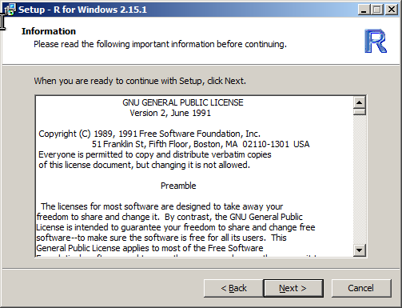


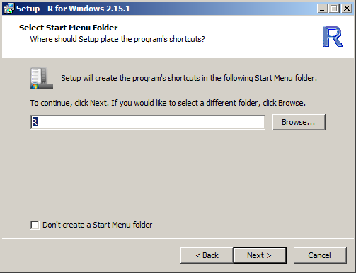


Once R is finished installing, you need to install the rlecuyer package. To install it from an interactive R session, simply start an R session and issue the command

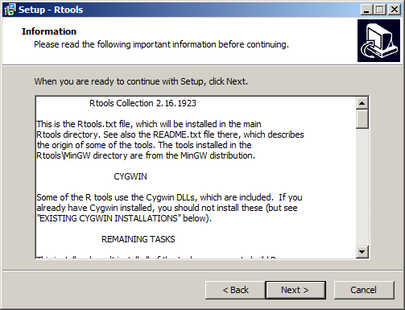


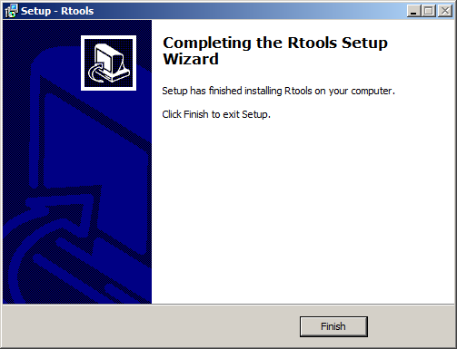
Before proceeding, please be aware that this installation requires administrative privileges.
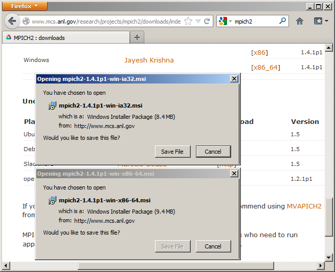
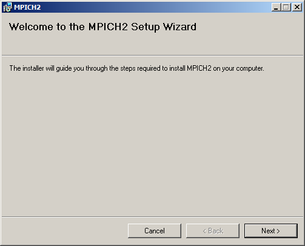
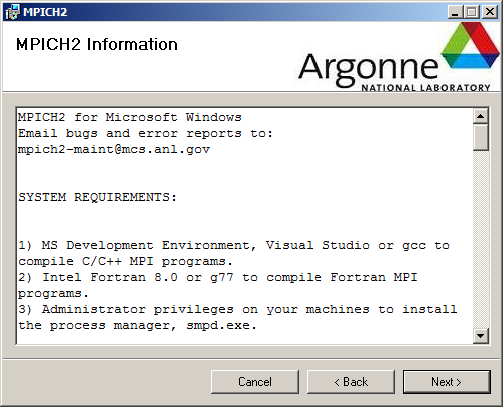
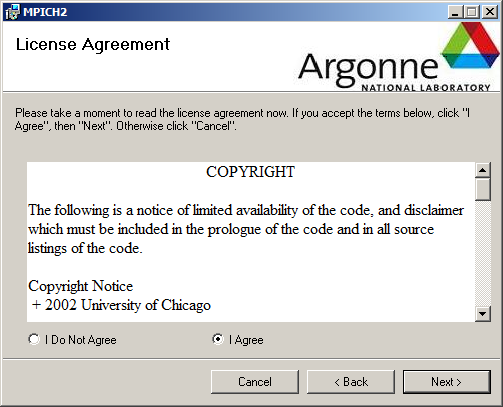

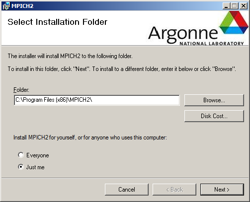
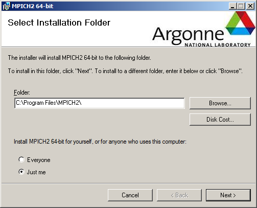
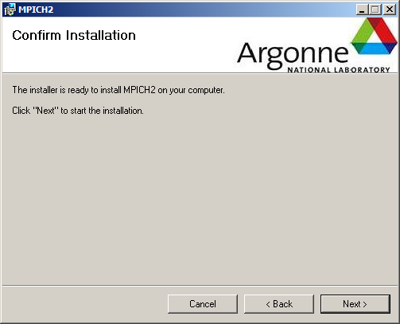
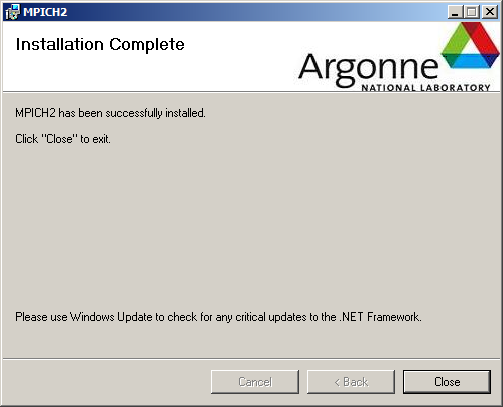
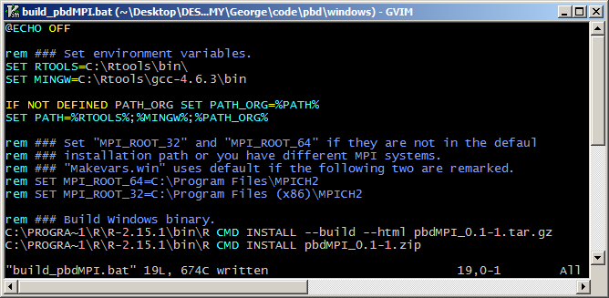
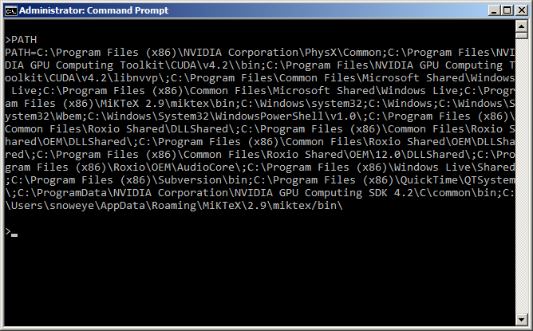
SHELL> C:\PROGRA˜1\MPICH2\bin\mpiexec -np 2 hostname.exe
SHELL> C:\PROGRA˜1\R\R-2.15.1\bin\R --vanilla --slave -e ”ls()”
SHELL> C:\PROGRA˜1\R\R-2.15.1\bin\Rscript --vanilla --slave -e ”ls()”
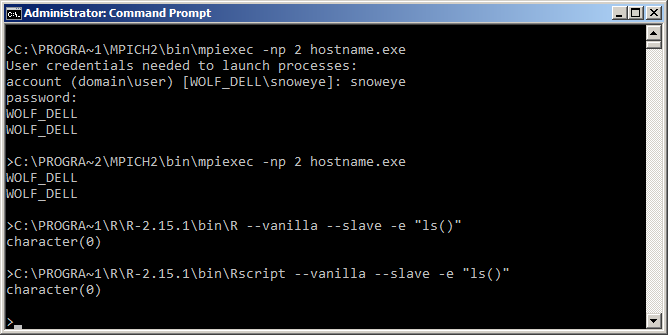

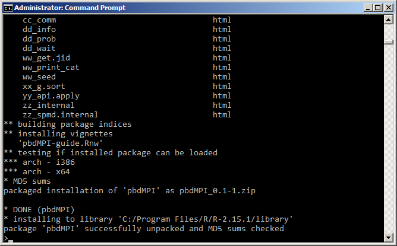
Before starting, make sure you have installed XCode. You can find this in the Mac App Store.
terminal
You can find R sources from http://cran.r-project.org/sources.html
Generally, it should be enough to simply execute
without problems.
If you want to install OpenMPI from source (I don’t really recommend this unless this document is irrelevant to you in the first place), then the sources are available here: http://www.open-mpi.org/software/ompi/v1.6/ .
Installing pbdR should go smoothly. The simplest way to install the packages is from an R terminal, which will manage dependencies for you much like your distro’s package manager. Additionally, our packages are available in the Fedora repositories.
This is perhaps the simplest way to proceed, as R will handle any package dependency resolution for you. Simply start an R session (from the terminal1 , type R then press enter) and issue the command:
So for example, to install pbdMPI, you might execute:
If you have downloaded a pbdR (or other R) package, then installing from the shell simply amounts to issuing the command:
So for example, to install pbdMPI, you might execute:
CRAN policy is such that updates to packages can not be made too frequently. For this reason, the development versions of our packages will have bugfixes and new features much more quickly than CRAN versions.
Before starting, make sure you have
On Linux, unless you have a specific reason not to (in which case, most of this document is probably unnecessary for you), we recommend that you install R and MPI through your distribution’s package repository.
If instructions for your favorite distribution are not listed below, we would be happy to incorporate submissions/corrections.
terminal
If your distribution is Debian-derived, including Debian, Ubuntu, and Mint:
If your distribution is “Redhat-ish”, including Redhat, Fedora, and CentOS:
If your distribution is OpenSUSE:
If you are using FreeBSD:
You can find R sources from http://cran.r-project.org/sources.html
Generally, it should be enough to simply execute
without problems.
For these systems, we recommend using OpenMPI. To install OpenMPI
If your distribution is Debian-derived, including Debian, Ubuntu, and Mint:
If your distribution is “Redhat-ish”, including Fedora and CentOS:
If your distribution is OpenSUSE:
If you are using FreeBSD:
If you want to install OpenMPI from source (I don’t really recommend this unless this document is irrelevant to you in the first place), then the sources are available here: http://www.open-mpi.org/software/ompi/v1.6/ .
Installing pbdR should go smoothly. The simplest way to install the packages is from an R terminal, which will manage dependencies for you much like your distro’s package manager. Additionally, our packages are available in the Fedora repositories.
This is perhaps the simplest way to proceed, as R will handle any package dependency resolution for you. Simply start an R session (from the terminal, type R then press enter) and issue the command:
So for example, to install pbdMPI, you might execute:
If you have downloaded a pbdR (or other R) package, then installing from the shell simply amounts to issuing the command:
So for example, to install pbdMPI, you might execute:
CRAN policy is such that updates to packages can not be made too frequently. For this reason, the development versions of our packages will have bugfixes and new features much more quickly than CRAN versions.
The easiest way to install from github is using Hadley Wichkam’s devtools package (which can be installed via install.packages(devtools)). Assuming you have this package installed, then from an R session, then to install a pbdR package, you would issue one of the following:
During the course of installation, you may run into unrecoverable issues. The pbdR team does not support MPI libraries or R core, so if you have problems during that portion of the installation phase, we probably can not directly help you. However, there are still many great resources at your disposal, maintained by those individual projects.
If you have problems installing or customizing R, see the R Installation and Administration Manual at http://cran.r-project.org/doc/manuals/R-admin.html for help.
If you are having trouble installing an MPI library, you should see that library’s official documentation. For OpenMPI, see http://www.open-mpi.org/community/help/ and for MPICH, see http://www.mpich.org/documentation/guides/ .
For the remainder, we will be addressing installation issues with pbdR packages.
This is a quick list of potential problems you could encounter when installing pbdR packages. For additional troubleshooting or installation options, each package has a vignette which may offer additional useful information.
R CMD INSTALL pbdMPI_0.1-6.tar.gz \
--configure-args=’--with-Rmpi-type=OPENMPI’
or if installing from R:
See the pbdMPI vignette for more details.
R CMD INSTALL pbdMPI_0.1-6.tar.gz --no-test-load
or if installing from R:
This information is covered in much more detail in the pbdDEMO vignette, and should not be considered a substitute. However, there are two key points one needs to understand in order to use pbdR tools. Namely,
For full details, see the pbdDEMO package vignette.
Below is a simple pbdR script. This will help you know if things are installed properly or not. To understand what the script is doing, or to learn how to do much more substantial things, you should see the pbdDEMO package vignette.
To run the script, you must do so in batch (i.e., non-interactively). First save its contents to the file my˙script.r, and then open a terminal/command prompt. On Linux and Mac, you should execute the command:
mpirun -np 2 Rscript my_script.r
On Windows, you should execute the command:
mpiexec.exe -np 2 Rscript my_script.r